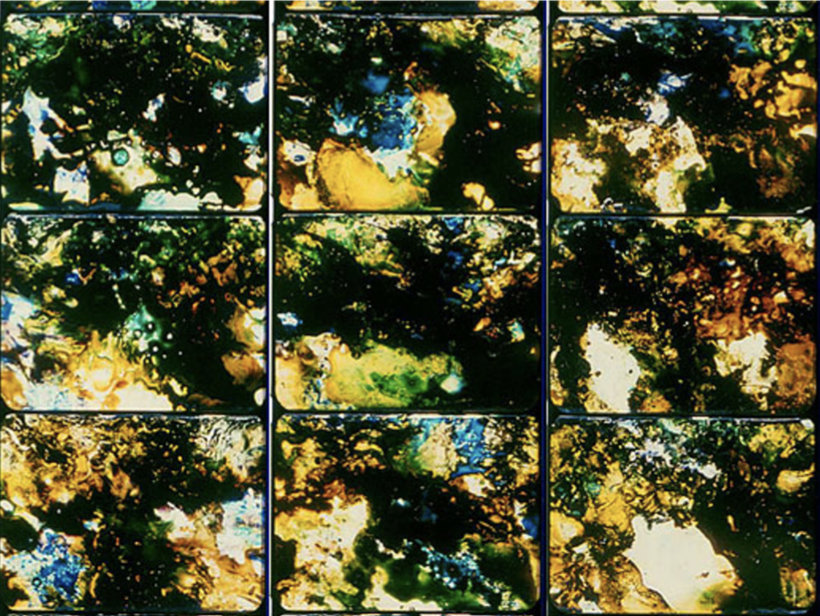
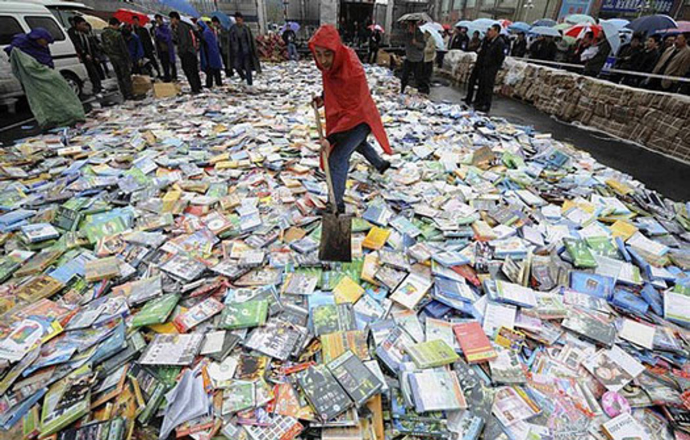

The poor image embodies the afterlife of many former masterpieces of cinema and video art. It has been expelled from the sheltered paradise that cinema seems to have once been.17 After being kicked out of the protected and often protectionist arena of national culture, discarded from commercial circulation, these works have become travelers in a digital no-man’s land, constantly shifting their resolution and format, speed and media, sometimes even losing names and credits along the way.
Now many of these works are back—as poor images, I admit. One could of course argue that this is not the real thing, but then—please, anybody—show me this real thing.
The poor image is no longer about the real thing—the originary original. Instead, it is about its own real conditions of existence: about swarm circulation, digital dispersion, fractured and flexible temporalities. It is about defiance and appropriation just as it is about conformism and exploitation.
In short: it is about reality.
17 At least from the perspective of nostalgic delusion.
But, simultaneously, a paradoxical reversal happens. The circulation of poor images creates a circuit, which fulfills the original ambitions of militant and (some) essayistic and experimental cinema—to create an alternative economy of images, an imperfect cinema existing inside as well as beyond and under commercial media streams. In the age of file-sharing, even marginalized content circulates again and reconnects dispersed worldwide audiences.
The poor image thus constructs anonymous global networks just as it creates a shared history. It builds alliances as it travels, provokes translation or mistranslation, and creates new publics and debates. By losing its visual substance it recovers some of its political punch and creates a new aura around it. This aura is no longer based on the permanence of the “original,” but on the transience of the copy. It is no longer anchored within a classical public sphere mediated and supported by the frame of the nation state or corporation, but floats on the surface of temporary and dubious data pools.15 By drifting away from the vaults of cinema, it is propelled onto new and ephemeral screens stitched together by the desires of dispersed spectators.
The circulation of poor images thus creates “visual bonds,” as Dziga Vertov once called them.15 This “visual bond” was, according to Vertov, supposed to link the workers of the world with each other.16 He imagined a sort of communist, visual, Adamic language that could not only inform or entertain, but also organize its viewers. In a sense, his dream has come true, if mostly under the rule of a global information capitalism whose audiences are linked almost in a physical sense by mutual excitement, affective attunement, and anxiety.
But there is also the circulation and production of poor images based on cell phone cameras, home computers, and unconventional forms of distribution. Its optical connections—collective editing, file sharing, or grassroots distribution circuits—reveal erratic and coincidental links between producers everywhere, which simultaneously constitute dispersed audiences.
The circulation of poor images feeds into both capitalist media assembly lines and alternative audiovisual economies. In addition to a lot of confusion and stupefaction, it also possibly creates disruptive movements of thought and affect. The circulation of poor images thus initiates another chapter in the historical genealogy of nonconformist information circuits: Vertov’s “visual bonds,” the internationalist workers pedagogies that Peter Weiss described in The Aesthetics of Resistance, the circuits of Third Cinema and Tricontinentalism, of non-aligned filmmaking and thinking. The poor image—ambivalent as its status may be—thus takes its place in the genealogy of carbon-copied pamphlets, cine-train agit-prop films, underground video magazines and other nonconformist materials, which aesthetically often used poor materials. Moreover, it reactualizes many of the historical ideas associated with these circuits, among others Vertov’s idea of the visual bond.
Imagine somebody from the past with a beret asking you, “Comrade, what is your visual bond today?”
You might answer: it is this link to the present.
15 Dziga Vertov, “Kinopravda and Radiopravda,” in Kino-Eye: The Writings of Dziga Vertov, ed. Annette Michelson (Berkeley: University of California Press, 1995), 52.
16 Vertov, “Kinopravda and Radiopravda,” 52.
Chris Marker’s virtual home on Second Life, May 29, 2009.
The emergence of poor images reminds one of a classic Third Cinema manifesto, For an Imperfect Cinema, by Juan García Espinosa, written in Cuba in the late 1960s.8 Espinosa argues for an imperfect cinema because, in his words, “perfect cinema—technically and artistically masterful—is almost always reactionary cinema.” The imperfect cinema is one that strives to overcome the divisions of labor within class society. It merges art with life and science, blurring the distinction between consumer and producer, audience and author. It insists upon its own imperfection, is popular but not consumerist, committed without becoming bureaucratic.
In his manifesto, Espinosa also reflects on the promises of new media. He clearly predicts that the development of video technology will jeopardize the elitist position of traditional filmmakers and enable some sort of mass film production: an art of the people. Like the economy of poor images, imperfect cinema diminishes the distinctions between author and audience and merges life and art. Most of all, its visuality is resolutely compromised: blurred, amateurish, and full of artifacts.
In some way, the economy of poor images corresponds to the description of imperfect cinema, while the description of perfect cinema represents rather the concept of cinema as a flagship store. But the real and contemporary imperfect cinema is also much more ambivalent and affective than Espinosa had anticipated. On the one hand, the economy of poor images, with its immediate possibility of worldwide distribution and its ethics of remix and appropriation, enables the participation of a much larger group of producers than ever before. But this does not mean that these opportunities are only used for progressive ends. Hate speech, spam, and other rubbish make their way through digital connections as well. Digital communication has also become one of the most contested markets—a zone that has long been subjected to an ongoing original accumulation and to massive (and, to a certain extent, successful) attempts at privatization.
The networks in which poor images circulate thus constitute both a platform for a fragile new common interest and a battleground for commercial and national agendas. They contain experimental and artistic material, but also incredible amounts of porn and paranoia. While the territory of poor images allows access to excluded imagery, it is also permeated by the most advanced commodification techniques. While it enables the users’ active participation in the creation and distribution of content, it also drafts them into production. Users become the editors, critics, translators, and (co-)authors of poor images.
Poor images are thus popular images—images that can be made and seen by the many. They express all the contradictions of the contemporary crowd: its opportunism, narcissism, desire for autonomy and creation, its inability to focus or make up its mind, its constant readiness for transgression and simultaneous submission.9 Altogether, poor images present a snapshot of the affective condition of the crowd, its neurosis, paranoia, and fear, as well as its craving for intensity, fun, and distraction. The condition of the images speaks not only of countless transfers and reformattings, but also of the countless people who cared enough about them to convert them over and over again, to add subtitles, reedit, or upload them.
In this light, perhaps one has to redefine the value of the image, or, more precisely, to create a new perspective for it. Apart from resolution and exchange value, one might imagine another form of value defined by velocity, intensity, and spread. Poor images are poor because they are heavily compressed and travel quickly. They lose matter and gain speed. But they also express a condition of dematerialization, shared not only with the legacy of conceptual art but above all with contemporary modes of semiotic production.10 Capital’s semiotic turn, as described by Felix Guattari,11 plays in favor of the creation and dissemination of compressed and flexible data packages that can be integrated into ever-newer combinations and sequences.12
Thomas Ruff, jpeg rl104, 2007.
This flattening-out of visual content—the concept-in-becoming of the images—positions them within a general informational turn, within economies of knowledge that tear images and their captions out of context into the swirl of permanent capitalist deterritorialization.13 The history of conceptual art describes this dematerialization of the art object first as a resistant move against the fetish value of visibility. Then, however, the dematerialized art object turns out to be perfectly adapted to the semioticization of capital, and thus to the conceptual turn of capitalism.14 In a way, the poor image is subject to a similar tension. On the one hand, it operates against the fetish value of high resolution. On the other hand, this is precisely why it also ends up being perfectly integrated into an information capitalism thriving on compressed attention spans, on impression rather than immersion, on intensity rather than contemplation, on previews rather than screenings.
8 Julio García Espinosa, “For an Imperfect Cinema,” trans. Julianne Burton, Jump Cut, no. 20 (1979): 24–26.
9 See Paolo Virno, A Grammar of the Multitude: For an Analysis of Contemporary Forms of Life (Cambridge, MA: MIT Press, 2004).
10 See Alex Alberro, Conceptual Art and the Politics of Publicity(Cambridge, MA: MIT Press, 2003).
11 See Félix Guattari, “Capital as the Integral of Power Formations,” in Soft Subversions (New York: Semiotext(e), 1996), 202.
12 All these developments are discussed in detail in an excellent text by Simon Sheikh, “Objects of Study or Commodification of Knowledge? Remarks on Artistic Research,” Art & Research 2, no. 2 (Spring 2009). See here ↪
13 See also Alan Sekula, “Reading an Archive: Photography between Labour and Capital,” in Visual Culture: The Reader, ed. Stuart Hall and Jessica Evans (London/New York: Routledge 1999), 181–192.
14 See Alberro, Conceptual Art and the Politics of Publicity.
That rare prints of militant, experimental, and classical works of cinema as well as video art reappear as poor images is significant on another level. Their situation reveals much more than the content or appearance of the images themselves: it also reveals the conditions of their marginalization, the constellation of social forces leading to their online circulation as poor images.4 Poor images are poor because they are not assigned any value within the class society of images—their status as illicit or degraded grants them exemption from its criteria. Their lack of resolution attests to their appropriation and displacement.5
Obviously, this condition is not only connected to the neoliberal restructuring of media production and digital technology; it also has to do with the post-socialist and postcolonial restructuring of nation states, their cultures, and their archives. While some nation states are dismantled or fall apart, new cultures and traditions are invented and new histories created. This obviously also affects film archives—in many cases, a whole heritage of film prints is left without its supporting framework of national culture. As I once observed in the case of a film museum in Sarajevo, the national archive can find its next life in the form of a video-rental store.6 Pirate copies seep out of such archives through disorganized privatization. On the other hand, even the British Library sells off its contents online at astronomical prices.
As Kodwo Eshun has noted, poor images circulate partly in the void left by state-cinema organizations who find it too difficult to operate as a 16/35-mm archive or to maintain any kind of distribution infrastructure in the contemporary era.7 From this perspective, the poor image reveals the decline and degradation of the film essay, or indeed any experimental and non-commercial cinema, which in many places was made possible because the production of culture was considered a task of the state. Privatization of media production gradually grew more important than state controlled/sponsored media production. But, on the other hand, the rampant privatization of intellectual content, along with online marketing and commodification, also enable piracy and appropriation; it gives rise to the circulation of poor images.
4 Thanks to Kodwo Eshun for pointing this out.
5 Of course in some cases images with low resolution also appear in mainstream media environments (mainly news), where they are associated with urgency, immediacy, and catastrophe—and are extremely valuable. See Hito Steyerl, “Documentary Uncertainty,” A Prior 15 (2007).
6 Hito Steyerl, “Politics of the Archive: Translations in Film,” Transversal (March 2008). See here ↪
7 From correspondence with the author via e-mail.

Nine 35mm film frames from Stan Brakhage’s Existence is Song, 1987.
But insisting on rich images also had more serious consequences. A speaker at a recent conference on the film essay refused to show clips from a piece by Humphrey Jennings because no proper film projection was available. Although there was at the speaker’s disposal a perfectly standard DVD player and video projector, the audience was left to imagine what those images might have looked like.
In this case the invisibility of the image was more or less voluntary and based on aesthetic premises. But it has a much more general equivalent based on the consequences of neoliberal policies. Twenty or even thirty years ago, the neoliberal restructuring of media production began slowly obscuring non-commercial imagery, to the point where experimental and essayistic cinema became almost invisible. As it became prohibitively expensive to keep these works circulating in cinemas, so were they also deemed too marginal to be broadcast on television. Thus they slowly disappeared not just from cinemas, but from the public sphere as well. Video essays and experimental films remained for the most part unseen save for some rare screenings in metropolitan film museums or film clubs, projected in their original resolution before disappearing again into the darkness of the archive.
This development was of course connected to the neoliberal radicalization of the concept of culture as commodity, to the commercialization of cinema, its dispersion into multiplexes, and the marginalization of independent filmmaking. It was also connected to the restructuring of global media industries and the establishment of monopolies over the audiovisual in certain countries or territories. In this way, resistant or non-conformist visual matter disappeared from the surface into an underground of alternative archives and collections, kept alive only by a network of committed organizations and individuals, who would circulate bootlegged VHS copies amongst themselves. Sources for these were extremely rare—tapes moved from hand to hand, depending on word of mouth, within circles of friends and colleagues. With the possibility to stream video online, this condition started to dramatically change. An increasing number of rare materials reappeared on publicly accessible platforms, some of them carefully curated (Ubuweb) and some just a pile of stuff (YouTube).
At present, there are at least twenty torrents of Chris Marker’s film essays available online. If you want a retrospective, you can have it. But the economy of poor images is about more than just downloads: you can keep the files, watch them again, even reedit or improve them if you think it necessary. And the results circulate. Blurred AVI files of half-forgotten masterpieces are exchanged on semi-secret P2P platforms. Clandestine cell-phone videos smuggled out of museums are broadcast on YouTube. DVDs of artists’ viewing copies are bartered.3 Many works of avant-garde, essayistic, and non-commercial cinema have been resurrected as poor images. Whether they like it or not.
3 Sven Lütticken’s excellent text “Viewing Copies: On the Mobility of Moving Images,” in e-flux journal, no. 8 (May 2009), drew my attention to this aspect of poor images.

Shoveling pirated DVDs in Taiyuan, Shanxi province, China, April 20, 2008
In one of Woody Allen’s films the main character is out of focus.1 It’s not a technical problem but some sort of disease that has befallen him: his image is consistently blurred. Since Allen’s character is an actor, this becomes a major problem: he is unable to find work. His lack of definition turns into a material problem. Focus is identified as a class position, a position of ease and privilege, while being out of focus lowers one’s value as an image.
The contemporary hierarchy of images, however, is not only based on sharpness, but also and primarily on resolution. Just look at any electronics store and this system, described by Harun Farocki in a notable 2007 interview, becomes immediately apparent.2 In the class society of images, cinema takes on the role of a flagship store. In flagship stores high-end products are marketed in an upscale environment. More affordable derivatives of the same images circulate as DVDs, on broadcast television or online, as poor images.
Obviously, a high-resolution image looks more brilliant and impressive, more mimetic and magic, more scary and seductive than a poor one. It is more rich, so to speak. Now, even consumer formats are increasingly adapting to the tastes of cineastes and esthetes, who insisted on 35 mm film as a guarantee of pristine visuality. The insistence upon analog film as the sole medium of visual importance resounded throughout discourses on cinema, almost regardless of their ideological inflection. It never mattered that these high-end economies of film production were (and still are) firmly anchored in systems of national culture, capitalist studio production, the cult of mostly male genius, and the original version, and thus are often conservative in their very structure. Resolution was fetishized as if its lack amounted to castration of the author. The cult of film gauge dominated even independent film production. The rich image established its own set of hierarchies, with new technologies offering more and more possibilities to creatively degrade it.
1 Deconstructing Harry, directed by Woody Allen (1997).
2 “Wer Gemälde wirklich sehen will, geht ja schließlich auch ins Museum,” Frankfurter Allgemeine Zeitung, June 14, 2007. Conversation between Harun Farocki and Alexander Horwath.
Journal #10 - November 2009
The poor image is a copy in motion. Its quality is bad, its resolution substandard. As it accelerates, it deteriorates. It is a ghost of an image, a preview, a thumbnail, an errant idea, an itinerant image distributed for free, squeezed through slow digital connections, compressed, reproduced, ripped, remixed, as well as copied and pasted into other channels of distribution.
The poor image is a rag or a rip; an AVI or a JPEG, a lumpen proletarian in the class society of appearances, ranked and valued according to its resolution. The poor image has been uploaded, downloaded, shared, reformatted, and reedited. It transforms quality into accessibility, exhibition value into cult value, films into clips, contemplation into distraction. The image is liberated from the vaults of cinemas and archives and thrust into digital uncertainty, at the expense of its own substance. The poor image tends towards abstraction: it is a visual idea in its very becoming.
The poor image is an illicit fifth-generation bastard of an original image. Its genealogy is dubious. Its filenames are deliberately misspelled. It often defies patrimony, national culture, or indeed copyright. It is passed on as a lure, a decoy, an index, or as a reminder of its former visual self. It mocks the promises of digital technology. Not only is it often degraded to the point of being just a hurried blur, one even doubts whether it could be called an image at all. Only digital technology could produce such a dilapidated image in the first place.
Poor images are the contemporary Wretched of the Screen, the debris of audiovisual production, the trash that washes up on the digital economies’ shores. They testify to the violent dislocation, transferrals, and displacement of images—their acceleration and circulation within the vicious cycles of audiovisual capitalism. Poor images are dragged around the globe as commodities or their effigies, as gifts or as bounty. They spread pleasure or death threats, conspiracy theories or bootlegs, resistance or stultification. Poor images show the rare, the obvious, and the unbelievable—that is, if we can still manage to decipher it.